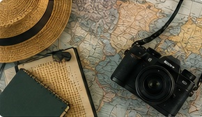

Kyoto Beyond the Checklist

Kyoto becomes more interesting when you stop trying to complete it.
The city is packed with temples, shrines, gardens, traditional neighborhoods, tea houses, and recognizable landmarks. That abundance makes it tempting to build an itinerary that leaves almost no time to actually experience the city.

The best travel memories are often the moments that never appeared on the itinerary.
Choose fewer major destinations. Walk more between them. Leave enough time to notice ordinary streets, small restaurants, a quiet cup of tea, or a neighborhood you had no intention of visiting.